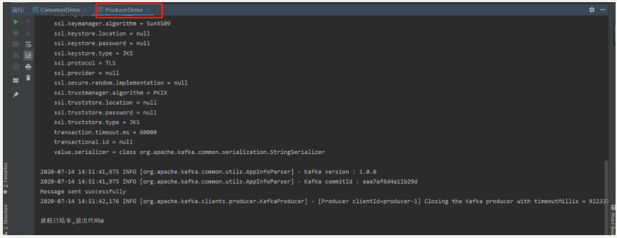
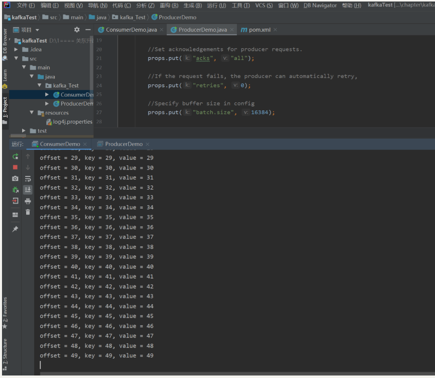
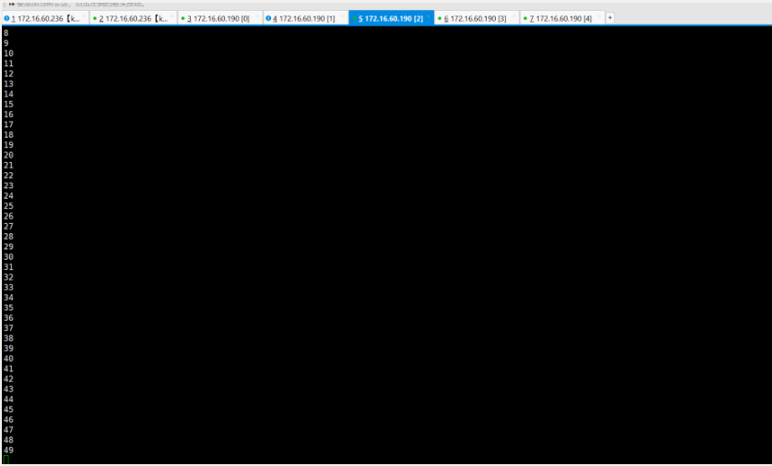

Contents
1.3. Apache Kafka¶
Apache Kafka 是一种高吞吐的分布式发布订阅消息系统，可以提供消息的持久化，即使数据以TB的消息存储也能够保持长时间的文档性能，同时Kafka也支持Hadoop并行数据加载。
1.3.1. Apache Kafka的安装、配置、使用¶
1.下载安装¶
安装包的下载地址为 http://kafka.apache.org/downloads.html>
这里下载的是kafka_2.13-2.5.0.tgz
tar -xzf kafka_2.13-2.5.0.tgz
cd kafka_2.13-2.5.0.
解压安装包kafka_2.13-2.5.0.tgz到任意安装目录，如果是unix系统，则执行安装目录下的bin目录下的脚本，如果是windows系统，则执行bin/windows目录下的脚本。
2.启动kafka server服务¶
因Kafka使用了ZooKeeper，所以，首先启动ZooKeeper（Kafka自带打包和配置好了的ZooKeeper），执行：
[root@px-master kafka_2.13-2.5.0]# ./bin/zookeeper-server-start.sh config/zookeeper.properties
现在启动Kafka服务：
[root@px-master kafka_2.13-2.5.0]# ./bin/kafka-server-start.sh config/server.properties &
3.创建topic¶
创建一个名为“test”的Topic，只有一个分区和一个备份：
[root@px-master kafka_2.13-2.5.0]# ./bin/kafka-topics.sh --create --zookeeper localhost:2181 --replication-factor 1 --partitions 1 --topic test
Created topic test.
创建好之后，可以通过运行以下命令，查看已创建的topic信息：
[root@px-master kafka_2.13-2.5.0]# ./bin/kafka-topics.sh --list --zookeeper localhost:2181
test
除了手工创建topic，我们也可以配置直接的broker，当发布一个不存在的topic时，来自动创建topic。
4.发送消息¶
Kafka提供一个命令行的工具，可以从输入文件或者命令行中读取消息并发送给Kafka集群，每一行是一条消息。
运行Producer程序，然后在控制台输入几条消息到服务器。
[root@px-master kafka_2.13-2.5.0]# bin/kafka-console-producer.sh --broker-list localhost:9092 --topic test
>asasas
>asasas
>saasa
>aasdsa
>asa
5.启动消费者¶
[root@px-master kafka_2.13-2.5.0]# bin/kafka-console-consumer.sh --bootstrap-server localhost:9092 --topic test --from-beginning
This is another message
This is a message
This is another message
aaa
aaaaaaaaaaaaaaaaaaaaa
aaaaaaaaaaaaaaa
bbbbbbbbbbbbbbbbbbbbbbbbbbbbbbbbb
cccccccccccccccccc
asasas
asasas
saasa
aasdsa
asa
如果无法启动，根据提示，可能需要加zookeeper：
$ bin/kafka-console-consumer.sh --bootstrap-server localhost:9092 --zookeeper localhost:2181 --topic test --from-beginning
如果在2台不同的终端上运行上述命令，那么当运行Producer时，Consumer就能消费到Producer发送的消息。
6.设置多个broker集群¶
对于Kafka来说，一个broker仅仅是一个集群的大小，即使多设置几个broker实例也不会有大的变化，为了演示效果，我们扩展集群到三个节点。
首先为每个broker创建一个配置文件：
$ cp config/server.properties config/server-1.properties
$ cp config/server.properties config/server-2.properties
编辑这些新建的文件。
$ cat config/server-1.properties |grep -v "^#"|grep -v "^$"
broker.id=1
listeners=PLAINTEXT://:9093
log.dirs=/tmp/kafka-logs-1
$ cat config/server-2.properties |grep -v "^#"|grep -v "^$"
broker.id=2
listeners=PLAINTEXT://:9094
log.dirs=/tmp/kafka-logs-2
broker.id是集群中每个节点的唯一且永久的名称，端口和日志分区是因为多个broker现在在同一台机器上运行，我们防止broker在同一端口上注册和覆盖对方数据。
我们已经运行了Zookeeper和一个Kafka节点，所以只需要再启动2个新的Kafka节点：
$ ./bin/kafka-server-start.sh config/server-1.properties &
$ ./bin/kafka-server-start.sh config/server-2.properties &
现在创建一个topic，把备份设置为3
$ bin/kafka-topics.sh --create --zookeeper localhost:2181 --replication-factor 3 --partitions 1 --topic my-replic
ated-topic
Created topic my-replicated-topic.
现在已经有了一个集群了，运行“describe topics”命令可以查看每个集群的状态。
$ bin/kafka-topics.sh --describe --zookeeper localhost:2181 --topic my-replicated-topic
Topic: my-replicated-topic PartitionCount: 1 ReplicationFactor: 3 Configs:
Topic: my-replicated-topic Partition: 0 Leader: 1 Replicas: 1,0,2 Isr: 1,0,2
这是一个解释输出，第一行是所有分区的摘要，每一个线提供一个分区信息，因为只有一个分区，所以只有一条线，其中。
- Leader —该节点负责所有指定分区的读和写，每个节点的领导都是随机选择的；
- Replicas—备份的节点，无论该节点是否是leader或者目前是否还活着，只是显示；
- Isr—-备份节点的集合，也就是活着的节点集合。
查看之前创建的单节点：
$ bin/kafka-topics.sh --describe --zookeeper localhost:2181 --topic test
Topic: test PartitionCount: 1 ReplicationFactor: 1 Configs:
Topic: test Partition: 0 Leader: 0 Replicas: 0 Isr: 0
由于刚才创建的topic没有Replicas，所以是0。
发布一些信息在新的topic上：
$ bin/kafka-console-producer.sh --broker-list localhost:9092 --topic myreplicated-topic
>dasdasdasda
[2020-07-14 11:48:34,231] WARN [Producer clientId=console-producer] Error while fetching metadata with correlation id 3 : {myreplicated-topic=LEAD
ER_NOT_AVAILABLE} (org.apache.kafka.clients.NetworkClient)a>dadasdasdasd
>my test message 1
>my test message 2
>adsdsa
现在消费这些信息：
$ bin/kafka-console-consumer.sh --bootstrap-server localhost:9092 --topic myreplicated-topic --from-beginning
dasdasdasda
adadasdasdasd
my test message 1
my test message 2
adsdsa
要测试集群的容错，kill掉leader，由于Broker1是当前的leader，被kill掉也就是Broker 1：
ps aux | grep server-1.properties
$ kill -9 3025
备节点之一成为新的leader，而Broker 1 已经不在同步备份集合里了：
$ bin/kafka-topics.sh --describe --zookeeper localhost:2181 --topic my-replicated-topic
Topic: my-replicated-topic PartitionCount: 1 ReplicationFactor: 3 Configs:
Topic: my-replicated-topic Partition: 0 Leader: 0 Replicas: 1,0,2 Isr: 0,2
但是消息仍然没丢
$ bin/kafka-console-consumer.sh --bootstrap-server localhost:9092 --topic myreplicated-topic --from-beginning
dasdasdasda
adadasdasdasd
my test message 1
my test message 2
adsdsa
sdasdas
7.kafka指令大全¶
bin/kafka-topics.sh --zookeeper localhost:2181 --list
//查看列表有那些topics
sh bin/kafka-topics.sh --delete --zookeeper localhost:2181 --topic sparkDemo
//删除topics：sparkDemo
bin/kafka-topics.sh --create --zookeeper localhost:2181 --replication-factor 1 --partitions 3 --topic sparkDemo
//创建topics：sparkDemo
bin/kafka-server-start.sh -daemon config/server.properties
//启动kafka
bin/kafka-console-producer.sh --broker-list localhost:9092 --topic HelloWor ld
//启动生产者
bin/kafka-console-consumer.sh --zookeeper localhost:2181 --topic HelloWorld
//启动消费者
8.用Java(idea)来测试kafka中的生产者和消费者¶
idea环境 打开idea并且创建maven项目。（不会的自己去百度） pow.xml：
<?xml version="1.0" encoding="UTF-8"?>
<project xmlns="http://maven.apache.org/POM/4.0.0"
xmlns:xsi="http://www.w3.org/2001/XMLSchema-instance"
xsi:schemaLocation="http://maven.apache.org/POM/4.0.0 http://maven.apache.org/xsd/maven-4.0.0.xsd">
<modelVersion>4.0.0</modelVersion>
<groupId>kafkaTest</groupId>
<artifactId>kafkaTest</artifactId>
<version>1.0.0</version>
<dependencies>
<dependency>
<groupId>org.apache.kafka</groupId>
<artifactId>kafka_2.12</artifactId>
<version>1.0.0</version>
</dependency>
<dependency>
<groupId>org.apache.kafka</groupId>
<artifactId>kafka-clients</artifactId>
<version>1.0.0</version>
</dependency>
<dependency>
<groupId>org.apache.kafka</groupId>
<artifactId>kafka-streams</artifactId>
<version>1.0.0</version>
</dependency>
</dependencies>
</project>
先关闭Kafka服务
$ bin/kafka-server-stop.sh config/server.properties &
修改配置文件vim config/server.properties
$ cat config/server.properties|grep -v "^#"|grep -v "^$"
broker.id=0
listeners=PLAINTEXT://172.16.60.190:9092
advertised.listeners=PLAINTEXT://172.16.60.190:9092
启动Kafka服务
$ bin/kafka-server-start.sh config/server.properties &
$ bin/kafka-topics.sh --create --zookeeper localhost:2181 --replication-factor 1 --partitions 1 --topic HelloWorld
//创建topics：HelloWorld
$ bin/kafka-topics.sh --zookeeper localhost:2181 --list
Java生产者代码
ProducerDemo.java
package kafka_Test;
import java.util.Properties;
import org.apache.kafka.clients.producer.KafkaProducer;
import org.apache.kafka.clients.producer.Producer;
import org.apache.kafka.clients.producer.ProducerConfig;
import org.apache.kafka.clients.producer.ProducerRecord;
import org.apache.kafka.common.serialization.StringSerializer;
public class ProducerDemo {
public static void main(String[] args) {
String topicName = "HelloWorld";//这个是创建好的topic
// create instance for properties to access producer configs
Properties props = new Properties();
//这里是填你linux的ip地址:kafka的端口号
props.put("bootstrap.servers", "172.16.60.190:9092");
//Set acknowledgements for producer requests.
props.put("acks", "all");
//If the request fails, the producer can automatically retry,
props.put("retries", 0);
//Specify buffer size in config
props.put("batch.size", 16384);
//Reduce the no of requests less than 0
props.put("linger.ms", 1);
//The buffer.memory controls the total amount of memory available to the producer for buffering.
props.put("buffer.memory", 33554432);
props.put(ProducerConfig.VALUE_SERIALIZER_CLASS_CONFIG, StringSerializer.class.getName());
props.put(ProducerConfig.KEY_SERIALIZER_CLASS_CONFIG, StringSerializer.class.getName());
Producer<String, String> producer = new KafkaProducer<String, String>(props);
for (int i = 0; i < 50; i++)
producer.send(new ProducerRecord<String, String>(topicName, Integer.toString(i), Integer.toString(i)));
System.out.println("Message sent successfully");
producer.close();
}
}

Java消费者代码 ConsumerDemo.java
package kafka_Test;
import org.apache.kafka.clients.consumer.ConsumerRecord;
import org.apache.kafka.clients.consumer.ConsumerRecords;
import org.apache.kafka.clients.consumer.KafkaConsumer;
import org.apache.kafka.common.serialization.StringDeserializer;
import java.util.Arrays;
import java.util.Properties;
public class ConsumerDemo {
public static void main(String[] args) throws Exception {
//Kafka consumer configuration settings
String topicName = "HelloWorld";//创建好的topic
Properties props = new Properties();
props.put("bootstrap.servers", "172.16.60.190:9092");//地址和端口号
props.put("group.id", "test");
props.put("enable.auto.commit", "true");
props.put("auto.commit.interval.ms", "1000");
props.put("session.timeout.ms", "30000");
props.put("key.deserializer", StringDeserializer.class.getName());
props.put("value.deserializer", StringDeserializer.class.getName());
KafkaConsumer<String, String> consumer = new KafkaConsumer<String, String>(props);
//Kafka Consumer subscribes list of topics here.
consumer.subscribe(Arrays.asList(topicName));
//print the topic name
System.out.println("Subscribed to topic " + topicName);
int i = 0;
while (true) {
ConsumerRecords<String, String> records = consumer.poll(100);
for (ConsumerRecord<String, String> record : records)
// print the offset,key and value for the consumer records.
System.out.printf("offset = %d, key = %s, value = %s\n", record.offset(), record.key(), record.value());
}
}
}

查看Linux里面的消费者，然后再执行生产者的代码，也能看到消费信息：
bin/kafka-console-consumer.sh --bootstrap-server PLAINTEXT://172.16.60.190:9092 --topic HelloWorld --from-beginning

参考文献